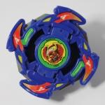

Dranzer V
| Dranzer Volcano | |
|  | |
| Number: | A-47 |
|---|---|
| System: | 5 Layer System, Magnecore |
| Type: | Balance |
Contents
- Note: The Sonokong version of Dranzer V, like all pre-Engine Gear System Sonokong Beyblades, comes with smaller parts than Takara and Hasbro Beyblades, and as a result is not fully compatible with them.
- Note: Dranzer V's unique South Magnecore was never officially named as anything other than 'South Magnecore'. The name used in this article is therefore unofficial, but used to differentiate it from the regular South Magnecore.
Attack Ring (AR): Cross Attacker
- Weight: 5.6 grams
Cross Attacker is a fairly small Attack Ring, taking the form of four phoenix heads, each followed by a wing. Each wing has a steep slope, suitable for Upper Attack in right spin, though due to their short length and the fact they lack any additional ability to reach under opponents, they produce noticeably less Upper Attack than mainstays of the type, such as Kid- and Master Dragoon's Upper Dragoon, or even Driger G's Triple Tiger. The sets of phoenix heads and wings are each separated by a single small spike, the leading edge of which juts out parallel from the Attack Ring. The miniscule size of these spikes mean they rarely make contact with the opponent, though their flat faces would likely result in little more than additional Recoil if they did.
The sharp ends of the wings provide moderately effective Smash Attack in right spin, and while not nearly as effective as Triple Wing or Cross Griffon due to a combination of limited range and slight Recoil issues due to the angle of its contact points, Cross Attacker is still a decent choice if superior alternatives are unavailable.
In left spin, the rounded front edges of the wings and the small protrusions on their outer edges form the main contact points. Both of these surfaces produce a large amount of Recoil due to their sheer size and the inability to focus hits that results from their shapes. As a result, Cross Attacker should not be used in left spin for any type of customization.
Use in Smash Attack Customization
- AR: Cross Attacker (Dranzer V)
- WD: Wide Defense
- BB: Grip Base (Dragoon Grip Attacker)
While not a top tier choice, Cross Attacker can be used fairly effectively in a standard Smash Attack setup. Grip Base provides excellent speed, and is a relatively short base, allowing Cross Attacker to exert some Upper Attack in addition to the Smash Attack it produces. Wide Defense has decent weight to control the combination's Recoil, and its externalized weight distribution maximises the speed and movement of the customization. While Cross Attacker's issues limit the customization as a whole, it is still a highly effective Attack type Beyblade, and should not be underestimated.
Weight Disk (WD): Ten Balance
- Weight: 14.9 grams
See Ten Balance.
Spin Gear (SG): Neo Right SG (South Magnecore (Dranzer V Version))
- Weight (Total): 5.6 grams
- Weight (Core): 3.3 grams
Dranzer V comes with a unique South Magnecore, designed to allow Volcano Change Base to be slightly shorter than allowed by a regular Magnecore. To allow this, two major alterations are made. Firstly, the magnet sits higher in the Core - small protrusions hold it up so it sits partially inside the cap of the plastic shell, and the obstructions present there in other Cores are removed. In addition to this, the gear section at the bottom of the Core and the cylinder it surrounds are shortened, the latter to a lesser degree. These alterations allow the lower half to sit much higher and more snugly than it otherwise could, and the resulting shorter height noticeably improves Volcano Change Base's performance.
In addition to its use with Volcano Change Base, the alteration to the lower section allows three interchangeable Tips, those of Magne Flat Base, SG Grip Base and Customize Grip Base to sit slightly higher in the Bases they are compatible with, resulting in a shorter combination overall.
While this may seem useful, given height is a common complaint about these Tips, the extent to which it lowers their height makes it a double edged sword for the only one of them which is considered competitive, that of Customize Grip Base. Customize Grip Base's Tip is raised to a point where if used with its own Base, the sides of the Base's shaft section often make contact with the stadium floor, creating scraping issues early in matches, and reducing the combination's movement later. As no other Base allows the use of Support Parts with Customize Grip Base's Tip, this means a choice between taller height with the use of Attack Rings and Support Parts that can compensate for it, and in the latter case improve weight distribution and Life After Death, and lower height but using the inferior Magne Flat Base or SG Grip Base (of which only the rarer Black version is resilient enough for competitive use). Worsening this, Grip Base is a much better choice for right spin customs in this height range, meaning any real use is left to left spin customs, many of which benefit more from the Life After Death and weight distribution benefits of Support Parts, though this remains the main competitive use of this aspect of South Magnecore (Dranzer V Version).
Use in Smash Attack Customization
- AR: G Upper (Dragoon GT)
- WD: Wide Defense
- SG: Neo Left SG
- SG Core: South Magnecore (Dranzer V Version)
- BB: Magne Flat Base (Dragoon V)
- Tip: Customize Grip Base Tip (Dragoon V2)
G Upper is one of the few Attack Rings that significantly benefits from Dranzer V's unique Core, as it suffers from Recoil issues on Customize Grip Base due to the height of that Base, rendering it ineffective. However, not only does this setup bring it down to a much more suitable height, but it truly allows G Upper to shine, its superior range and moderate Upper Attack ability making it a better choice than Eight Spiker, its better synergy with the Base making it a better choice than Panther Head, and its comparatively low Recoil making it a safe choice for the Tip, unlike any of the more powerful alternatives, which all suffer more severe Recoil. Wide Defense is chosen to allow for optimum speed and aggression while having enough weight to control any Recoil produced. The combination of high speed, good height, and an excellent Attack Ring make for a very powerful Smash Attack customization which easily earns its top tier status.
Blade Base (BB): Volcano Change Base
- Weight: 6.6 grams
Carrying on the tradition of Dranzer Blade Bases having a mode change gimmick, Volcano Change Base has two modes, Attack Mode and Endurance Mode. This is achieved through a unique two-part design which uses the Magnecore system's magnetic gimmick to hold the Base together.
The upper half of the Base is fairly simple, a small, mostly circular part that has little structural purpose, serving mainly to cover the Spin Gear and give the appearance of a complete Blade Base when combined with its lower half. It is so short, in fact, that it ends at the same height as the bottom of the Spin Gear Core. While it does house the Base Clips, they themselves only serve to hold this part of the Base in place.
The lower half of Volcano Change Base consists of a metal shaft with one end Flat, labelled Semi-Flat by Takara presumably due to its relatively small width (given a lack of significant bevelling), and used for Attack Mode, and the other Sharp, used for Endurance Mode. In the middle of this shaft is a small circular platform, which is surrounded by a free-spinning plastic disk, which, while not supported by a bearing, allows for comparable Life After Death to weaker bearing-based setups. This lower half is unique in that it is only held in place by the magnetic attraction of a Magnecore, with one end of the shaft being inserted into the hole at the bottom of the Core, making contact with the magnet inside.
Volcano Change Base's Endurance Mode is simply worthless, the abysmal stability of the Metal Sharp tip means that even with the Life After Death of the free spinning disk, combinations using it are easily outspun, if its pitiful defenses even allow it to survive long enough for Survival to be of any value. This poor performance negates the value of being able to change modes without disassembling the Beyblade.
As such, Attack Mode is where all of Volcano Change Base's value resides, the relatively small width of its tip allowing for excellent controllability compared to other metal-tipped Attack Bases, especially considering its relatively low friction, and the relatively tall height of the base is easily compensated for by low hanging Attack Rings such as Triple Tiger or Upper Claw. While considered outclassed by SG Metal Flat Base (Gaia Dragoon V Version) and the shaft of Driger F's SG (Full Auto Clutch Version), due to their faster movement and the latter offering a much more effective combination of Attack and Survival properties (given appropriate customization), Volcano Change Base's excellent ease of use and the forgiving nature of its decent Survival ability means it is a good base for those new to Plastic Generation Attack types, though as with all metal-tipped Attack Bases, the relatively poor recoil control should be accounted for.
However, Volcano Change Base's use is not limited to Attack. In fact, it is arguably more useful for its oft-overlooked Survival ability. The good stability and fairly low friction of Attack Mode combined with Volcano Change Base's innate Life After Death allows it to be used successfully for Zombie customizations. While not a top tier choice, Volcano Change Base provides similar Survival ability to the Base and Spin Gear of Wolborg, but with far more versatility, due to the aggressive nature of the Tip and the superior Defense resulting from its ability to catch the Tornado Ridge, making it one of the better second tier Zombie Bases. It should be noted, however, that due to Volcano Change Base's small width, it is one of a few Bases which rely on the Weight Disk for Life After Death, making Wide Survivor more important than ever.
As a whole, then, Volcano Change Base is a versatile, reliable and incredibly easy to use Blade Base which falls just short of greatness due to the availability of more focused alternatives.
Rule Clarifications
- Volcano Change Base's two halves are considered a single part, and as such may not be used separately.
- While some abnormally tight Cores can hold the lower part of Volcano Change Base in place without magnetism, this is an unintended consequence of random variation in molding rather than an intended feature, and as such it is illegal to use Volcano Change Base without a Magnecore.
Use in Smash Attack Customization
While not a top tier Attack Base, Volcano Change Base can be fairly effective if used in a setup that compensates for its shortcomings, an example of which is as follows:
- AR: Triple Tiger (Driger G)
- WD: Wide Defense
- SG: Neo Right SG
- SG Core: South Magnecore (Dranzer V Version) (Dranzer V
- BB: Volcano Change Base (Attack Mode) (Dranzer V)
Unlike most competitive Smash Attack ARs, Triple Tiger's contact points are situated at the level of the Weight Disk, which helps compensate for the height of taller Blade Bases, such as Volcano Change Base. Wide Defense is used to enhance the Smash Attack of this combination, and also supports the Survival abilities of the metal Tip, resulting in a well balanced combination that is quite forgiving for players new to Attack in the Plastic Generation.
Use in Zombie Customization
The following is an example of a relatively affordable (yet rather effective) Zombie customization using Volcano Change Base.
- AR: Scissor Attacker (Metal Dranzer)
- WD: Wide Survivor
- SG: Neo Left SG
- SG Core: South Magnecore (Dranzer V Version)
- BB: Volcano Change Base (Attack Mode) (Dranzer V)
This is a fairly standard Zombie setup - Scissor Attacker has excellent Survival ability in left spin, and aligns well with Wide Survivor, only slightly protruding past the edge of the Weight Disk, perfect for Spin Stealing. Wide Survivor's circular design allows for optimum Life After Death, as Volcano Change Base allows it to make contact with the ground near the end of Battles, as well as having excellent Survival and Spin Stealing ability. Wide Defense could be used for more Defense and Attack, however the significant Stamina trade off is rarely worthwhile.
Gallery
Dranzer V - Original Version
Other Versions
- Dranzer V - White Version
- Dranzer V - A-80 Beystadium Magne Dome - Hyper Red Version (Red) - comes with a unique North Magnecore (Dranzer V Version).
- Dranzer V - Toys 'R' Us Ultimate BeyStadium (Black Lightning Version) - Thunder Phoenix Version (Yellow)
Overall
While it doesn't excel in any particular field, Dranzer V is a very well rounded Beyblade, with a fairly useful Weight Disk, passable Attack Ring, and a Blade Base which offers solid performance in Attack and Survival and most notably, impressive ease of use. These factors combine to create a Beyblade that is not only decent out of the box, but quite simple to improve, making it a great choice for Bladers who are new to Plastic Beyblades. Lastly, the unique Spin Gear is interesting if not particularly useful, and Neo Spin Gear Casings are always a positive inclusion. While not a must have, Dranzer V is a useful Beyblade to own, especially for beginners.